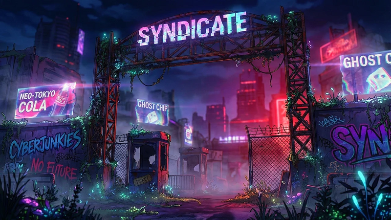

Player wiki noticeThis community-maintained page may contain gameplay, story, and mature-content spoilers.
混乱辛迪加 Story 指南
那个 混乱辛迪加 未来的故事线 围绕 总理区的辛迪加门本指南遵循共享任务 线后,然后选择 辛迪加联盟 侧寻及其军队解锁 。
破坏方法: 事件名称、目的地、解锁要求和游戏游戏奖赏被列出。 人物秘密、主要启示和场景结果留给您去发现。 联盟部分描述了其解锁奖赏,但没有重述故事。

开始
- 到达 未来的总理部门 选择 辛迪加门 。当前 Syndicate 内容被构建到游戏中;不需要单独的 Syndicate 模式。
- 完成 混乱之门到达 议员 结束 密码 或 大顶,并达到 莫特莱的巢穴 帕罗的
- 回到大门去 守门员,然后完成其他介绍。 新变量 需要请客 让小丑进来 在娱乐屋。
- 开始 收款 在《财富报》的Booth 上,一旦其四个列出的介绍完成。 遵循共享任务表顺序,在下一组活动之前完成平行的分支。
这些故事事件 输入正确位置时自动触发 符合所有要求。它们会完成一次。一个人物的肖像表会规范肖像交互;除非表格列出一个时间要求,否则这不是一个群体故事事件的额外条件。完成一个事件后,请离开并重新进入检查下一个事件。
最初共享的故事线并不需要完成每个人的浪漫路线,它的关键额外大门是: 7: 00 - 17: 00 调制Rookie, 打开门的原始 Rogue 50,以及 蜂蜜壶的原始Rogue 55. 后期联盟有自己的StoryBeat 85要求.
地点和船员
辛迪加8个地点之间的旅费 游戏零分钟. 肖像互动、经验教训、日期和H2Hs 仍然使用自己列出的时间和资源。
| 地点 | 直接辛迪加连接 | 常规肖像 |
|---|---|---|
| 辛迪加门 | Big Top, Den, Fortune Teller's Booth, Funhouse, Garden (美国著名音乐家)大顶, Den, Fortune Teller's Booth, Funhouse, 花园 | Bayne一整天, 都一样 |
| 大顶 | 盖茨 帕洛尔 娱乐场 福特勒布斯 | Kitty一整天, 都一样 |
| 密码 | 盖茨,帕罗 | 时间自动挂机场景; 见下文 |
| "财富报"的Booth | 盖茨,大顶 | Zodiac一整天, 都一样 |
| 娱乐中心 | 盖茨,大顶 | Chamel 00:00-09:00和15:00-24:00; Chamella 09:00–15:00 |
| 花园 | 盖茨 | Poison一整天, 都一样 |
| 议员 | 登,大顶,Motley的巢穴 | 共同特派团和联盟会议 |
| 莫特莱的巢穴 | 园丁 | 莫特莱一整天, 都一样 |
所有肖像时间表每天都重复。结束时间是独家的: 09:00 Funhouse 肖像切换到 Chamella ,并在 15:00 切换到Chamel,他们有不同的爱总和。
导言
| 活动 | 向甚么处去. | 所有所需经费 |
|---|---|---|
| 混乱之门 | 辛迪加门 | 第一次访问;无需提前进行辛迪加活动 |
| 新变量 | 议员 | 第一次访问;无需提前进行辛迪加活动 |
| 守门员 | 辛迪加门 | 混乱之门 |
| 新鲜肉 | 大顶 | 第一次访问;无需提前进行辛迪加活动 |
| 前言会议 | "财富报"的Booth | 第一次访问;无需提前进行辛迪加活动 |
| 让小丑进来 | 娱乐中心 | 新变量 |
| 街头知识 | 花园 | 混乱之门 |
| 欢迎来到马戏团 | 莫特莱的巢穴 | 第一次访问;无需提前进行辛迪加活动 |
一个高效的首次巡演是 大门 → 巢穴 → 会客厅 → 兽穴 → 会客厅 → 马戏大帐篷 → 摊位 → 大门 → 趣味屋 → 大门 → 花园 → 大门。如果另一场景在前次访问中占据了优先地位,则重新进入大门。主线需要命名的介绍;只要打开一张肖像,其介绍场景就不完整。
共享任务第一部分
| 活动 | 向甚么处去. | 所有所需经费 |
|---|---|---|
| 收款 | "财富报"的Booth | 前卫会议;鲜肉; 送进小丑; 守门员 |
| 收取会费 -- -- 律师协会 | 合成人再充电站 | 收款 |
| 猫的眼睛 | 大顶 | 收取会费 -- -- 律师协会 |
| 新鲜血 | "财富报"的Booth | 收取会费 -- -- 律师协会 |
| 面额 | 娱乐中心 | 收取会费 -- -- 律师协会 |
| 猛击新手 | 主运输枢纽 | 新血; 07: 00-17: 00( 结束独家) |
| 老板会注意到的 | 莫特莱的巢穴 | 驯服Rookie欢迎来到马戏团 |
| 董事会的线路 | 议员 | 猫眼; 街头知识; 老板注意到 |
之后 收取会费 -- -- 律师协会,三个分支打开: 猫的眼睛, 新鲜血,以及 面额。新血通向Taming Rookie 和The Boss Takes注意到。 猫的眼睛+街头知识+老板的注意。以后没有计划生存需要面孔,所以在这条线路中完成它。
猛击新手 使用 主运输枢纽在马戏团外 07:00至16:59。在新血之后前往那里;在辛迪加门等待不会触发。完成 猫的眼睛 和 猛击新手 赠款 +1 永久轮廓,每奖励一次。
共享特派团第二部分
| 活动 | 向甚么处去. | 所有所需经费 |
|---|---|---|
| 打开门 | "财富报"的Booth | 板块上的线条; 原始 Rogue 50+ |
| 隐形 | 协同公司公司大楼 | 打开门 |
| 蜜壶 | 莫特莱的巢穴 | 隐形; 原始Rogue 55+ |
| 无计划存活 | 议员 | 蜜壶; 脸 |
| 被遗弃的房间 | 娱乐中心 | 无计划存活 |
| 错误 | 协同公司公司大楼 | 无计划存活 |
| 业绩 | 娱乐中心 | 废弃的房间; 臭虫 |
| 冲绳 | 娱乐中心 | 业绩 |
两个流氓门检查你 存储核心Rogue,在设备修饰器之前。如果配备的奖金使显示的有效值看起来足够高,则直接提高该数据。
之后 无计划存活,完成两个 被遗弃的房间 在娱乐之家和 错误 在协同公司公司大厦 回到娱乐之家 业绩,然后重新输入 冲绳。这些是共享故事触发器;Chamella的日间肖像换班并不是其中任一主线游乐场活动的额外要求。
共享特派团 第三部分
| 活动 | 向甚么处去. | 所有所需经费 |
|---|---|---|
| 秘密的重量 | 议员 | 冲绳 |
| 徽章和布卢斯特 | 辛迪加门 | 秘密的重量 |
| 第二次敲门 | 辛迪加门 | 秘密的重量;徽章和布卢斯特 |
| 线后 | 辛迪加门 | 第二次敲门 |
线后 完成这个初始的操作故事线 。 Gates在"一个秘密的重量" 之后连续主持三个事件,所以在每个事件之后重复条目 。 个人故事仍然单独提供,当您也完成时,可选的联盟继续打开 。 Story 击打 85.
辛迪加联盟侧式查询
开始联盟
完成 Story 击打85和线后,然后输入 抵抗堡垒行动中心 (单位:千美元) 强化室. 高度亲切性、较早的个人H2Hs或StoryBeat 85本身不能取代任何先决条件。
那个 通讯 任务列表显示 辛迪加联盟 在这两个先决条件之后, 并指向下一个目的地 。当所有七个联盟事件完成后,它的进入就会消失 。 这是一项带有自身序列的侧式探索;它不会推进编号为故事的光标 。
联盟路线
| 活动 | 向甚么处去. | 所有所需经费 |
|---|---|---|
| 强化室 | 抵抗堡垒:行动中心 | Story 85; 线后 |
| 不是免费的 | 议员 | 强化室 |
| 第三次敲门 | 辛迪加门 | 不是免费的 |
| 漫长的出路 | 娱乐中心 | 第三次敲门 |
| 指挥条件 | 议员 | 漫长的出路 |
| 她创造了什么 | 莫特莱的巢穴 | 指挥条件 |
| 我们的战争 | 议员 | 她创造了什么 |
每个事件都需要完成前一个事件。 没有额外的爱的阶段或时间门 爱心、趣味和欢乐会回答改变对爱的回报和对话,但所有这三者都通过联盟前进;没有必要的浪漫答案。
她创造了什么 承认你是否完成了Motley的 事实。这种个人场面改变了对话的一面;这是 不是结盟的先决条件你可以在完成她的私人关系之前完成联盟。
联盟爱慕奖
这些是 基础完成奖励,在关系奖金和随机化之前。选择会添加他们自己的特性奖励。实际收益可能不同于这些基本价值。
| 活动 | 完成时的感情 |
|---|---|
| 强化室 | Ghost+5,AIMy+3,Kitty+3 |
| 不是免费的 | Motley + 7, Zodiac + 3 |
| 第三次敲门 | Motley+6,Bayne+4,Poison+4,Kitty+2 |
| 漫长的出路 | Motley+5,Zodiac+4,Chamel+5,Kitty+3,Poison+3,Bayne+2 |
| 指挥条件 | Motley + 7, Ghost + 7 |
| 她创造了什么 | Motley + 10 (韩语) |
| 我们的战争 | Motley+10, Ghost+5, Kitty+5, Zodiac+5, Chamel+5, Poison+5, Bayne+5 |
联盟的解锁
- 正在完成 现场故事中的战争 新兵 Motley、Kitty、Bayne、Zodiac、Chamel和Poison Chamella不是从这一奖励中单独招募的军队。
- 保卫辛迪加之门 显示于 辛迪加门 打败85和我们的战争之后, 辛迪加门防御 竞选活动 25 个波 页:1 地区恢复者 老大 打开战场的锁 无穷模式战败时保留 EXP
- 莫特莱的 返回地点 H2H 于 莫特莱的巢穴 在我的战争之后, 朋友+ 时间轴费用 60分钟和10分钟能源 并且独立于她浪漫的H2H链.
EXTRAS重播不招募英雄. 正常播放时完成最后的游戏。 使用 塔楼防御 用于部署、兵营训练、设备、供应费用和战斗升级;这次探险提供了解锁,而不是自动胜利或免费训练。
亲情和罗格准备
经常预算 说话 行动要求 与该个人特征相适应+: 通常情况 50个感情。这需要 15分钟,奖励 1个基本感情,并有安全限制 每场比赛日5个字符。更多的尝试可以产生令人恼火的反应和感情惩罚。在依赖Talk之前,先使用自动介绍、共享任务和任何解锁的Den场景。
| 阶段 | 正常的感情门槛 |
|---|---|
| 已知 | 25 |
| 知识 | 50 |
| 朋友们 | 100 |
| 关闭朋友 | 200 |
| 粉笔 | 400 |
| 浪漫主义 | 800 |
| 亲密 | 1,600 |
| 在爱中 | 3,000 |
最爱的点数和角色的特殊技能 提高了感情增益。 奖金,而不是他们的引进的先决条件. 实际的情爱奖使用奖金和随机化的范围,所以巡演不能保证每个玩家最终的总和相同.
| 字符 | 最喜欢的数据 | 特殊关系技能 |
|---|---|---|
| Bayne | 实力90, Stamina 85, Persepion 85 | 恐吓存在 |
| Chamel | 魅力90,创意85,Rogue 85 | 欺骗 |
| Chamella | 魅力80、创意75、观念75 | 欺骗 |
| Kitty | 能力85、感知85、魅力85 | 杂技 |
| 莫特莱 | 情报90,Rogue 85,魅力85 | 银舌 |
| Poison | 实力90,Stamina 85,能力85 | 武术 |
| Zodiac | 神秘90,感知85,情报85 | 占卜 |
时 Kitty 知识+编辑 流氓培训 每一次成功的学习都要付出代价 150美元,60分钟和20分钟 并给出 +1 核心Rogue 和 3 基础 Kitty 爱它每天的安全限制是 3个。停在每天的限值上;在限值上进行训练不是继续获得相同奖励的方法。一旦Kitty到达交互门,就可以提供打开门和蜂蜜壶所需的Rogue。
如果某人仍然低于Acquaintance, 则要完成剩下的故事奖赏和他们的已知阶段 Den 场景。他们的普通的Talk动作不是一个陌生层次的追赶按钮。 个人角色指南列出了其他可用的互动和奖赏 。
可选的 Den 场景
六个人都是 一次性自动场景,需要 已知+ 带有特色字符,并使用下列每日重复窗口。
| 活动 | 向甚么处去. | 所有所需经费 |
|---|---|---|
| 猫出袋子了 | 密码 | Kitty 已知+; 00:00–06:00(结束独家) |
| 访谈 | 密码 | Motley Known+; 06:00-09:00 (端独家) |
| 停机时间 | 密码 | Bayne 已知+; 09:00-12:00(端独) |
| 绿色的东西 | 密码 | Poison 已知+; 中午12:00-18:00(端部独家) |
| 什么牌不显示 | 密码 | Zodiac 已知+; 18:00-2:00(结束独家) |
| 反思 | 密码 | Chamel 已知+; 18:00-2:00(结束独家) |
Zodiac和Chamel共用 18:00–24:00 窗口。一个场景结束后,如果满足了该场景的要求,则离开该场景并重新进入该场景。
可选字符 Story 路由
这些场景使用了自己的感情和情节要求。 与特派团共同序列和联盟征聘分开。每行列出所有需要的先前事件,而不仅仅是该字符路径中的最新事件。分号表示 全部 必须符合所列条件。
朋友里程碑
| 活动 | 向甚么处去. | 所有所需经费 |
|---|---|---|
| 猫咪的爪子 | 大顶 | Kitty 朋友+ |
| 死亡结束 | "财富报"的Booth | Zodiac 朋友+ |
| 窗帘调用 | 娱乐中心 | Chamel 朋友+ |
| 绿色缩略图 | 花园 | Poison 朋友+ |
| 意见 | 莫特莱的巢穴 | Motley 朋友组合 |
| 邮政 | 辛迪加门 | 新鲜肉; 预告会议; Bayne Friend+ |
关闭朋友里程碑
| 活动 | 向甚么处去. | 所有所需经费 |
|---|---|---|
| 第九生还者 | 大顶 | Kitten's Got Caws; Kitty 亲近的朋友+ |
| 桌上的纸牌 | "财富报"的Booth | 死尾; Zodiac 关闭朋友+ |
| 镜像 | 娱乐中心 | 窗帘调用; Chamel 关闭朋友+ |
| 根数 | 花园 | 绿色缩略图; Poison 密友+ |
| 告诉 | 莫特莱的巢穴 | 观察; Motley 密友+ |
| 常设观察 | 辛迪加门 | 帖子; Bayne 近亲+ |
朋友活动一般不需要完成较早的已知阶段的 Den 场景。 亲密的朋友活动需要相应的朋友活动 。 Bayne's 邮政 还需要Kitty和Zodiac介绍。
后来的个人事件
活动标题作为进步标签列入,其披露和结果没有说明。
| 活动 | 向甚么处去. | 所有所需经费 |
|---|---|---|
| 必要的邪恶 | "财富报"的Booth | Honeypot; Zodiac 近亲+ |
| 认罪 | "财富报"的Booth | 必要的邪恶; Zodiac 粉碎+ |
| 游戏 | 莫特莱的巢穴 | 蜜壶; 忏悔 |
| 测算 | 莫特莱的巢穴 | 认罪; 游戏; Motley Friend+ |
| 在窗帘后面 | "财富报"的Booth | 测算 |
| 苏门斯 | 莫特莱的巢穴 | 故事; 幕后; Motley Crush+ |
| 迷恋 | 密码 | 苏门斯; Motley 粉碎+ |
| 解析 | 莫特莱的巢穴 | 迷恋; Motley 浪漫主义+ |
| 事实 | 莫特莱的巢穴 | 解剖; Motley 浪漫主义+ |
| 击退 | 大顶 | 第九人生;Kitty Crush+ |
| 邀请 | 大顶 | 反推; Kitty 浪漫主义+ |
| 贴吧 | 大顶 | 邀请; Kitty 亲密关系+ |
| 测试 | 花园 | 根; 鲜肉; 寄入小丑; Poison Crush+ |
| 证明地面 | 花园 | 测试; Poison 浪漫主义+ |
| 真实 Poison | 花园 | 证明地; Poison 近亲+ |
| 真实的东西 | 大顶 | 镜; 冲绳; Chamel 亲密+ |
| 维吉尔 | 辛迪加门 | 常备观察; Bayne 粉碎+ |
| 骑士团 | 莫特莱的巢穴 | (原始内容存档于2018-03-03) (英语). The Vigil; TheTruth; Tamed; The Test; The Real Thing; Bayne Intimate+; Motley Romantic+. |
| 镜像责任 | 娱乐中心 | 面部; 09: 00 - 15: 00( 端部专属) |
对于Motley的后序,跟随 Zodiac 必要的邪恶 —— 忏悔,则 游戏 盘旋 幕后 在此之前 苏门斯苏门斯人也需要莫特利的 告诉 和 碾压+继续到迷幻之穴然后回到她的巢穴 继续浪漫的阶段活动
骑士团 是主跨字符完成门 : Bayne 近亲+, 莫特利浪漫主义+,以及所有这五起事件。 测试,而不是真实 Poison. Chamel 的 真实的东西 发生在 大顶尽管她的普通肖像 是在娱乐之家。
Chamella的 镜像责任 是在 面额; 不需要完成 No Plan Survives.她的主线外观并不共享Chamel 的爱心 。
可选H2Hs和其他相互作用
H2H是从字符肖像中选择的,而不是通过输入一个位置触发的. 完成一个自动个人事件不会完成一个标题不同的H2H. 每一个列出的H2H完成一次;在开始前保留时间和能源成本.
| 字符 | 高温 | 纵向位置 | 所需资源 | 费用 |
|---|---|---|---|---|
| Chamel | 小丑时间 | 娱乐中心 | 朋友+ 时间轴 | 30分钟/15个能源 |
| Chamel | 断裂的旋转木马 | 娱乐中心 | 关闭朋友+ | 45分钟/20 能源 |
| Poison | 补丁任务 | 花园 | 朋友+ 时间轴 | 60分钟/ 10 个能源 |
| Poison | 无装甲 | 花园 | 碾压+ | 75分钟/15个能源 |
| Zodiac | 公平游戏 | "财富报"的Booth | 朋友+ 时间轴 | 60分钟/ 10 个能源 |
| Zodiac | 靠近点 | "财富报"的Booth | 碾压+ | 75分钟/15个能源 |
| 莫特莱 | 无观众 | 莫特莱的巢穴 | 朋友+ 时间轴 | 60分钟/ 10 个能源 |
| 莫特莱 | 一个诚实的分钟 | 莫特莱的巢穴 | 关闭朋友+;未完成 H2H 观众 | 60分钟/ 10 个能源 |
| 莫特莱 | 最后一寸长 | 莫特莱的巢穴 | 浪漫主义+; 完成1个诚实一分钟 H2H; 真相 | 90分钟/20能源 |
| 莫特莱 | 返回地点 | 莫特莱的巢穴 | 朋友+;我们的战争 | 60分钟/ 10 个能源 |
Poison的和Zodiac的两座H2H有独立的舞台门;他们的Crush H2H不需要完成他们的朋友H2H. Motley's. 一个诚实的分钟 要求 无观众,以及 最后一寸长 既需要诚实的一分钟,也需要真理。 返回地点 而不是跟随联盟。
Kitty还提供 在漫游时 时间 碾压+从 18:00–22:00这一次约会的费用 80美元,120分钟和30分钟它与共同的故事和联盟是分开的。
六个可重复的私人视频动作解锁 准确总数: Kitty 样式, 证明自己, 与 Zodiac 亲密,以及 待一会儿 时间 1000个感情 具有各自特点; 黑暗后的花园 和 与Zodiac二号线连接 时间 1,500。每个需要 30分钟20个能量每天每次行动一次。浪漫主义从800开始,因此仅仅看到这个阶段并不能满足1000点的动作门。请咨询角色指南,了解详细的奖励和教训表。
解决问题和完成核对清单
| 问题 | 检查什么 |
|---|---|
| 进入时什么都没有发生 | 准确的目的地,所有先决条件,以及一次性事件是否已经完成。在另一事件之后离开并重新进入。 |
| 收款缺失 | 完成新鲜肉, 福特洛德会议, 送进小丑和守门员。 |
| 缺少委员会线路 | 完全的猫眼,街上的知识, 和老板得到注意; 后者需要欢迎到马戏团和塔明的Rookie。 |
| 刺杀失踪的Rookie | 新血完成; PrimeTransport Hub; 07:00–16:59. |
| 缺少打开的门或蜂蜜壶 | 校正之前的事件和核心Rogue 50或55. 设备奖金不能满足此图案检查. |
| 没有计划幸存 | 完成"蜜壶"和"脸蛋"两个部分. |
| 缺少的性能 | 完成被遗弃的房间和虫子。 |
| 无法发言 | 个人性格必须达到Acquaintance+. 单凭介绍并不能保证50个亲情. |
| Chamel 或 Chamella 画像丢失 | 请检查access-date=中的日期值 (帮助) Funhouse 换班;他们的分数和肖像互动是分开的. |
| 联盟条目缺失 | 完成StoryBeat 85和之后的线路,然后访问操作中心. |
| 联盟停止 | 遵循通讯和七事桌上的下一个目的地。真理和浪漫关系并不是额外的先决条件。 |
| 军队英雄仍然被锁着 | 在正常游戏中完成我们的战争; EXTRAS重播不会允许招募 。 |
| 门防缺失 | Story Beat 85 and Our War finished; 使用辛迪加盖茨的动作. |
| 缺少返回的地方 | Motley Friend+,我们的战争完成了,正确的Lair肖像,H2H还没有完成. |
结业证:
- 写完 八次介绍 和 随后共有20个特派团,结束于线后。
- 完成 Story 击打 85 和所有项目 七个联盟场景检查六名新兵和盖茨防御行动
- 填写 六个已知舞台登场, 六个朋友里程碑, 六个近友里程碑,则 19次后来的个人活动 在其单独的路由表。
- 写完 10个可用的H2Hs 和 Kitty如果您也想要字符交互, 则是单独的日期。可重复的视频是正在进行的交互, 而不是额外的共享故事里程碑 。
辛迪加和联盟登记册一起载有 72次自动报道事件 H2Hs、手动启动的日期、教训、谈话和可重复的视频都与该计数分开。最初的派别故事线、联盟和个人路线的完成是单独的目标;完成一个并不自动完成其他目标。
准确性说明
对照当前内置的图案注册、故事触发检查、位置连接、人物时间表和动作定义、关系门、联盟寻求提示、招募回调和Syndicate TD战斗 2026年10月4日 (中文(简体) ).。标题图像是游戏最初的Syndicate Gates定位艺术,而不是一个舞台剧插图截图。本指南列出了要求和奖励,同时将叙事启示留给游戏。
相关页面
Chaos Syndicate Story Guide
The Chaos Syndicate is a built-in Future storyline based around the Syndicate Gates in Prime Sector. This guide follows the shared missions through After the Line, then the optional Syndicate Alliance side quest and its army unlocks. The character-route sections explain the dependencies between individual stories.
Spoiler approach: Event names, destinations, unlock requirements, and gameplay rewards are listed. Character secrets, major revelations, and scene outcomes are left for you to discover. The alliance section describes its unlock rewards without recounting the story.
Getting Started
- Reach the Future Prime Sector and choose Syndicate Gates on its map. The current Syndicate content is built into the game; a separate Syndicate mod is not needed.
- Complete The Gates of Chaos, then visit the crew's locations below. Reach The Parlor through The Den or The Big Top, and reach Motley's Lair from The Parlor.
- Return to the Gates for The Gatekeeper, and finish the other introductions. The New Variable at The Parlor is required for Send in the Clown at The Funhouse.
- Begin Collecting Dues at the Fortune Teller's Booth once its four listed introductions are complete. Follow the shared-mission tables in order, completing parallel branches before their next group event.
These story events trigger automatically when you enter the correct location with all requirements satisfied. They complete once. A character's portrait schedule governs portrait interactions; it is not an extra condition for a group story event unless the table lists a time requirement. After completing one event, leave and re-enter to check for the next one.
The initial shared storyline does not require completing everyone's romance route. Its key additional gates are 07:00–17:00 for Taming the Rookie, raw Rogue 50 for Open Doors, and raw Rogue 55 for The Honeypot. The later alliance has its own Story Beat 85 requirement.
Locations and Crew
Travel between the eight Syndicate locations costs zero in-game minutes. Portrait interactions, lessons, dates, and H2Hs still spend their own listed time and resources.
| Location | Direct Syndicate connections | Regular portrait |
|---|---|---|
| Syndicate Gates | Big Top, Den, Fortune Teller's Booth, Funhouse, Garden | Bayne, all day |
| The Big Top | Gates, Parlor, Funhouse, Fortune Teller's Booth | Kitty, all day |
| The Den | Gates, Parlor | Timed automatic hangout scenes; see below |
| Fortune Teller's Booth | Gates, Big Top | Zodiac, all day |
| The Funhouse | Gates, Big Top | Chamel 00:00–09:00 and 15:00–24:00; Chamella 09:00–15:00 |
| The Garden | Gates | Poison, all day |
| The Parlor | Den, Big Top, Motley's Lair | Shared missions and alliance meetings |
| Motley's Lair | Parlor | Motley, all day |
All portrait schedules repeat every day. End times are exclusive: at 09:00 the Funhouse portrait switches to Chamella, and at 15:00 it switches back to Chamel. They have separate affection totals.
Introductions
| Event | Where to go | All requirements |
|---|---|---|
| The Gates of Chaos | Syndicate Gates | First visit; no earlier Syndicate event required |
| The New Variable | The Parlor | First visit; no earlier Syndicate event required |
| The Gatekeeper | Syndicate Gates | The Gates of Chaos |
| Fresh Meat | The Big Top | First visit; no earlier Syndicate event required |
| The Foretold Meeting | Fortune Teller's Booth | First visit; no earlier Syndicate event required |
| Send in the Clown | The Funhouse | The New Variable |
| Street Knowledge | The Garden | The Gates of Chaos |
| Welcome to the Circus | Motley's Lair | First visit; no earlier Syndicate event required |
An efficient first tour is Gates → Den → Parlor → Lair → Parlor → Big Top → Booth → Gates → Funhouse → Gates → Garden → Gates. Re-enter the Gates for The Gatekeeper if another scene took priority on the previous visit. The mainline requires the named introductions; simply opening a portrait does not mark its introduction scene complete.
Shared Missions Part One
| Event | Where to go | All requirements |
|---|---|---|
| Collecting Dues | Fortune Teller's Booth | The Foretold Meeting; Fresh Meat; Send in the Clown; The Gatekeeper |
| Collecting Dues - The Bar | Synthetic Beings Recharge Station | Collecting Dues |
| Cat's Eyes | The Big Top | Collecting Dues - The Bar |
| New Blood | Fortune Teller's Booth | Collecting Dues - The Bar |
| Faces | The Funhouse | Collecting Dues - The Bar |
| Taming the Rookie | Prime Transportation Hub | New Blood; 07:00–17:00 (end exclusive) |
| The Boss Takes Notice | Motley's Lair | Taming the Rookie; Welcome to the Circus |
| Lines on the Board | The Parlor | Cat's Eyes; Street Knowledge; The Boss Takes Notice |
After Collecting Dues - The Bar, three branches open: Cat's Eyes, New Blood, and Faces. New Blood leads to Taming the Rookie and The Boss Takes Notice. Lines on the Board needs Cat's Eyes + Street Knowledge + The Boss Takes Notice. Faces is required later for No Plan Survives, so complete it during this circuit.
Taming the Rookie uses the Prime Transportation Hub, outside the circus, from 07:00 through 16:59. Travel there after New Blood; waiting at the Syndicate Gates will not trigger it. Completing Cat's Eyes and Taming the Rookie grants +1 permanent Rogue each, once per reward.
Shared Missions Part Two
| Event | Where to go | All requirements |
|---|---|---|
| Open Doors | Fortune Teller's Booth | Lines on the Board; raw Rogue 50+ |
| Invisible | Synergy Corp Corporate Tower | Open Doors |
| The Honeypot | Motley's Lair | Invisible; raw Rogue 55+ |
| No Plan Survives | The Parlor | The Honeypot; Faces |
| The Abandoned Room | The Funhouse | No Plan Survives |
| The Bug | Synergy Corp Corporate Tower | No Plan Survives |
| The Performance | The Funhouse | The Abandoned Room; The Bug |
| The Punchline | The Funhouse | The Performance |
The two Rogue gates check your stored core Rogue, before equipment modifiers. Raise that stat directly if an equipped bonus makes the displayed effective value look high enough.
After No Plan Survives, finish both The Abandoned Room at The Funhouse and The Bug at Synergy Corp Corporate Tower. Return to The Funhouse for The Performance, then re-enter for The Punchline. These are shared story triggers; Chamella's daytime portrait shift is not an additional requirement for either of those mainline Funhouse events.
Shared Missions Part Three
| Event | Where to go | All requirements |
|---|---|---|
| The Weight of a Secret | The Parlor | The Punchline |
| Badge and Bluster | Syndicate Gates | The Weight of a Secret |
| The Second Knock | Syndicate Gates | The Weight of a Secret; Badge and Bluster |
| After the Line | Syndicate Gates | The Second Knock |
After the Line completes this initial operational storyline. The Gates host three consecutive events after The Weight of a Secret, so repeat the entry after each. Personal stories remain available separately, and the optional alliance continuation opens when you also complete Story Beat 85.
The Syndicate Alliance Side Quest
Starting the Alliance
Complete both Story Beat 85 and After the Line, then enter the Resistance Fortress's Operations Center for Room for Reinforcements. High affection, earlier personal H2Hs, or Story Beat 85 by itself do not replace either prerequisite.
The Communications quest list shows The Syndicate Alliance after those two prerequisites and points to the next destination. Its entry disappears when all seven alliance events are complete. This is a side quest with its own sequence; it does not advance the numbered story-beat cursor.
Alliance Route
| Event | Where to go | All requirements |
|---|---|---|
| Room for Reinforcements | Resistance Fortress: Operations Center | Story Beat 85; After the Line |
| Not for Free | The Parlor | Room for Reinforcements |
| The Third Knock | Syndicate Gates | Not for Free |
| The Long Way Out | The Funhouse | The Third Knock |
| Terms of Command | The Parlor | The Long Way Out |
| What She Built | Motley's Lair | Terms of Command |
| Our War | The Parlor | What She Built |
Each event requires the preceding event completed. There are no additional affection-stage or time-of-day gates on this seven-event route. The Caring, Funny, and Flirty answers change affection rewards and dialogue, but all three lead onward through the alliance; there is no required romance answer.
What She Built acknowledges whether you already completed Motley's The Truth. That personal scene changes a passage of dialogue; it is not an alliance prerequisite. You can complete the alliance before finishing her private relationship route.
Alliance Affection Rewards
These are the base completion rewards, before relationship bonuses and randomization. The choices add their own character-specific rewards. Actual gains can differ from these base values.
| Event | Base affection on completion |
|---|---|
| Room for Reinforcements | Ghost +5, AIMy +3, Kitty +3 |
| Not for Free | Motley +7, Zodiac +3 |
| The Third Knock | Motley +6, Bayne +4, Poison +4, Kitty +2 |
| The Long Way Out | Motley +5, Zodiac +4, Chamel +5, Kitty +3, Poison +3, Bayne +2 |
| Terms of Command | Motley +7, Ghost +7 |
| What She Built | Motley +10 |
| Our War | Motley +10, Ghost +5, Kitty +5, Zodiac +5, Chamel +5, Poison +5, Bayne +5 |
What the Alliance Unlocks
- Completing Our War in the live story recruits Motley, Kitty, Bayne, Zodiac, Chamel, and Poison as six TD army heroes. Chamella is not a separate army recruit from this reward. Affection totals, videos, and H2Hs are not substitute recruitment conditions.
- Defend the Syndicate Gates appears at the Syndicate Gates after Story Beat 85 and Our War. Its Syndicate Gate Defense campaign has 25 waves and the District Reclaimer boss. Clearing it unlocks that battlefield's Infinite Mode. Earned battle EXP is retained on defeat.
- Motley's A Place to Return H2H becomes available at Motley's Lair after Our War and Friend+. It costs 60 minutes and 10 Energy and is independent of her romantic H2H chain.
EXTRAS replay does not recruit the heroes. Complete the finale during normal play. Use Tower Defense for deployment, Barracks training, equipment, supply costs, and battle upgrades; this quest provides the unlocks rather than an automatic win or free training.
Affection and Rogue Preparation
The regular Talk action requires Acquaintance+ with that individual character: normally 50 affection. It takes 15 minutes, awards 1 base affection, and has a safe limit of five per character per in-game day. Additional attempts can produce an annoyed response and an affection penalty. Use the automatic introductions, shared missions, and any unlocked Den scenes before relying on Talk.
| Stage | Normal affection threshold |
|---|---|
| Known | 25 |
| Acquaintance | 50 |
| Friend | 100 |
| Close Friend | 200 |
| Crush | 400 |
| Romantic | 800 |
| Intimate | 1,600 |
| In Love | 3,000 |
Favorite-stat thresholds and the character's special skill improve affection gains; they are bonuses, not prerequisites for their introductions. Actual affection awards use bonuses and a randomized range, so a tour does not guarantee the same final total for every player.
| Character | Favorite stats | Special relationship skill |
|---|---|---|
| Bayne | Strength 90, Stamina 85, Perception 85 | Intimidating Presence |
| Chamel | Charm 90, Creativity 85, Rogue 85 | Deception |
| Chamella | Charm 80, Creativity 75, Perception 75 | Deception |
| Kitty | Ability 85, Perception 85, Charm 85 | Acrobatics |
| Motley | Intelligence 90, Rogue 85, Charm 85 | Silver Tongue |
| Poison | Strength 90, Stamina 85, Ability 85 | Martial Arts |
| Zodiac | Mystic 90, Perception 85, Intelligence 85 | Divination |
At Kitty Acquaintance+, use Rogue Training from her Big Top portrait. Each successful lesson costs $150, 60 minutes, and 20 Energy and gives +1 core Rogue and 3 base Kitty affection. Its safe daily limit is three. Stop at the daily limit; training over it is not a way to keep receiving the same reward. This can supply the Rogue needed for Open Doors and The Honeypot once Kitty reaches the interaction gate.
If someone remains below Acquaintance, complete remaining available story rewards and their Known-stage Den scene. Their ordinary Talk action is not a Stranger-level catch-up button. The individual character guide lists other available interactions and rewards.
Optional Den Scenes
All six are one-time automatic scenes at The Den, require Known+ with the featured character, and use the following repeating daily windows.
| Event | Where to go | All requirements |
|---|---|---|
| Cat's Out of the Bag | The Den | Kitty Known+; 00:00–06:00 (end exclusive) |
| The Interview | The Den | Motley Known+; 06:00–09:00 (end exclusive) |
| Downtime | The Den | Bayne Known+; 09:00–12:00 (end exclusive) |
| Something Green | The Den | Poison Known+; 12:00–18:00 (end exclusive) |
| What the Cards Don't Show | The Den | Zodiac Known+; 18:00–24:00 (end exclusive) |
| Reflections | The Den | Chamel Known+; 18:00–24:00 (end exclusive) |
Zodiac and Chamel share the 18:00–24:00 window. After one scene finishes, leave and re-enter the Den for the other if its requirements are met. Neither replaces the other's completion.
Optional Character Story Routes
These scenes use their own affection and plot requirements. They are separate from the shared mission sequence and alliance recruitment. Every row lists all required preceding events, not just the most recent event in that character's route. A semicolon means all listed conditions must be met.
Friend Milestones
| Event | Where to go | All requirements |
|---|---|---|
| Kitten's Got Claws | The Big Top | Kitty Friend+ |
| Dead Ends | Fortune Teller's Booth | Zodiac Friend+ |
| Curtain Call | The Funhouse | Chamel Friend+ |
| Green Thumb | The Garden | Poison Friend+ |
| The Observation | Motley's Lair | Motley Friend+ |
| The Post | Syndicate Gates | Fresh Meat; The Foretold Meeting; Bayne Friend+ |
Close Friend Milestones
| Event | Where to go | All requirements |
|---|---|---|
| The Ninth Life | The Big Top | Kitten's Got Claws; Kitty Close Friend+ |
| Cards on the Table | Fortune Teller's Booth | Dead Ends; Zodiac Close Friend+ |
| The Mirror | The Funhouse | Curtain Call; Chamel Close Friend+ |
| Roots | The Garden | Green Thumb; Poison Close Friend+ |
| The Tell | Motley's Lair | The Observation; Motley Close Friend+ |
| Standing Watch | Syndicate Gates | The Post; Bayne Close Friend+ |
The Friend events generally do not require completing the earlier Known-stage Den scene. Close Friend events do require their corresponding Friend event. Bayne's The Post additionally needs the Kitty and Zodiac introductions.
Later Personal Events
Event titles are included as progression labels; their revelations and outcomes are not described.
| Event | Where to go | All requirements |
|---|---|---|
| The Necessary Evil | Fortune Teller's Booth | The Honeypot; Zodiac Close Friend+ |
| The Confession | Fortune Teller's Booth | The Necessary Evil; Zodiac Crush+ |
| The Game | Motley's Lair | The Honeypot; The Confession |
| The Reckoning | Motley's Lair | The Confession; The Game; Motley Friend+ |
| Behind the Curtain | Fortune Teller's Booth | The Reckoning |
| The Summons | Motley's Lair | The Tell; Behind the Curtain; Motley Crush+ |
| The Fascination | The Den | The Summons; Motley Crush+ |
| The Dissection | Motley's Lair | The Fascination; Motley Romantic+ |
| The Truth | Motley's Lair | The Dissection; Motley Romantic+ |
| The Push Back | The Big Top | The Ninth Life; Kitty Crush+ |
| The Invitation | The Big Top | The Push Back; Kitty Romantic+ |
| Tamed | The Big Top | The Invitation; Kitty Intimate+ |
| The Test | The Garden | Roots; Fresh Meat; Send in the Clown; Poison Crush+ |
| Proving Ground | The Garden | The Test; Poison Romantic+ |
| The Real Poison | The Garden | Proving Ground; Poison Intimate+ |
| The Real Thing | The Big Top | The Mirror; The Punchline; Chamel Intimate+ |
| The Vigil | Syndicate Gates | Standing Watch; Bayne Crush+ |
| The Order | Motley's Lair | The Vigil; The Truth; Tamed; The Test; The Real Thing; Bayne Intimate+; Motley Romantic+ |
| Mirror Duty | The Funhouse | Faces; 09:00–15:00 (end exclusive) |
For Motley's later sequence, follow Zodiac's The Necessary Evil → The Confession, then The Game → The Reckoning → Behind the Curtain before The Summons. The Summons also needs Motley's The Tell and Crush+. Continue at the Den for The Fascination, then return to her Lair for the remaining Romantic-stage events.
The Order is the main cross-character completion gate: Bayne Intimate+, Motley Romantic+, and all five named preceding events. Its Poison requirement is The Test, not The Real Poison. Chamel's The Real Thing occurs at The Big Top, even though her ordinary portrait is in The Funhouse.
Chamella's Mirror Duty is a separate daytime event after Faces; it does not require finishing No Plan Survives. Her mainline appearances do not share Chamel's affection total.
Optional H2Hs and Other Interactions
H2Hs are selected from character portraits rather than triggered by entering a location. Completing an automatic personal event does not complete an H2H with a different title. Each listed H2H completes once; reserve its time and Energy costs before starting.
| Character | H2H | Portrait location | Requirements | Cost |
|---|---|---|---|---|
| Chamel | Clown Time | The Funhouse | Friend+ | 30 min / 15 Energy |
| Chamel | Broken Carousel | The Funhouse | Close Friend+ | 45 min / 20 Energy |
| Poison | Patch Job | The Garden | Friend+ | 60 min / 10 Energy |
| Poison | No Armor | The Garden | Crush+ | 75 min / 15 Energy |
| Zodiac | A Fair Game | Fortune Teller's Booth | Friend+ | 60 min / 10 Energy |
| Zodiac | Closer | Fortune Teller's Booth | Crush+ | 75 min / 15 Energy |
| Motley | No Audience | Motley's Lair | Friend+ | 60 min / 10 Energy |
| Motley | One Honest Minute | Motley's Lair | Close Friend+; No Audience H2H completed | 60 min / 10 Energy |
| Motley | The Last Inch | Motley's Lair | Romantic+; One Honest Minute H2H completed; The Truth | 90 min / 20 Energy |
| Motley | A Place to Return | Motley's Lair | Friend+; Our War | 60 min / 10 Energy |
Poison's and Zodiac's two H2Hs have independent stage gates; their Crush H2Hs do not require completing their Friend H2Hs. Motley's One Honest Minute requires No Audience, and The Last Inch requires both One Honest Minute and The Truth. A Place to Return follows the alliance instead.
Kitty also offers On the Prowl at Crush+, from 18:00–22:00, through her Big Top portrait. This one-time date costs $80, 120 minutes, and 30 Energy. It is separate from the shared story and the alliance.
The six repeatable private video actions unlock at exact totals: Kitty Style, Prove Yourself, Intimate with Zodiac, and Stay a While at 1,000 affection with their respective characters; The Garden After Dark and Intimate with Zodiac II at 1,500. Each takes 30 minutes and 20 Energy, once per action per day. Romantic begins at 800, so merely seeing that stage does not satisfy a 1,000-point action gate. Consult the character guides for the detailed reward and lesson tables.
Troubleshooting and Completion Checklist
| Problem | What to check |
|---|---|
| Nothing happens on entry | Exact destination, all prerequisites, and whether that one-time event already completed. Leave and re-enter after another event. |
| Collecting Dues missing | Finish Fresh Meat, The Foretold Meeting, Send in the Clown, and The Gatekeeper. |
| Lines on the Board missing | Complete Cat's Eyes, Street Knowledge, and The Boss Takes Notice; the latter needs Welcome to the Circus and Taming the Rookie. |
| Taming the Rookie missing | New Blood completed; Prime Transportation Hub; 07:00–16:59. |
| Open Doors or The Honeypot missing | Correct preceding event and core Rogue 50 or 55. Equipment bonuses do not satisfy this plot check. |
| No Plan Survives missing | Finish both The Honeypot and Faces. |
| The Performance missing | Finish both The Abandoned Room and The Bug. |
| Talk unavailable | That individual character must reach Acquaintance+. An introduction alone does not guarantee 50 affection. |
| Chamel or Chamella portrait missing | Check the alternating Funhouse shifts; their points and portrait interactions are separate. |
| Alliance entry missing | Complete both Story Beat 85 and After the Line, then visit Operations Center. |
| Alliance stops | Follow the next destination in Communications and the seven-event table. The Truth and a romance relationship are not additional prerequisites. |
| Army heroes still locked | Finish Our War in normal play; an EXTRAS replay does not grant recruitment. |
| Gate defense missing | Story Beat 85 and Our War completed; use the action at Syndicate Gates. |
| A Place to Return missing | Motley Friend+, Our War completed, correct Lair portrait, and H2H not already completed. |
For a completion pass:
- Finish the eight introductions and 20 subsequent shared missions, ending at After the Line.
- Complete Story Beat 85 and all seven alliance scenes, ending at Our War. Check the six army recruits and the Gates defense action.
- Complete the six Known-stage Den scenes, six Friend milestones, six Close Friend milestones, and the 19 later personal events in their separate route tables.
- Finish the ten available H2Hs and Kitty's separate date if you want the character interactions too. Repeatable videos are ongoing interactions, not extra shared-story milestones.
The Syndicate and alliance registries together contain 72 one-time automatic story events covered by the tables above. H2Hs, the manually started date, lessons, Talk, and repeatable videos are separate from that count. The initial faction storyline, the alliance, and personal route completion are separate goals; finishing one does not automatically complete the others.
Accuracy Notes
Checked against the current built-in plot registries, story trigger checks, location connections, character schedules and action definitions, relationship gates, alliance quest hints, recruitment callback, and Syndicate TD battle on 4 October 2026. The header image is the game's original Syndicate Gates location artwork, rather than a staged plot screenshot. This guide lists requirements and rewards while leaving the narrative revelations to the game.
Related Pages
Text adapted from the community-maintained Chronoromancer Wiki under CC BY-SA 4.0.